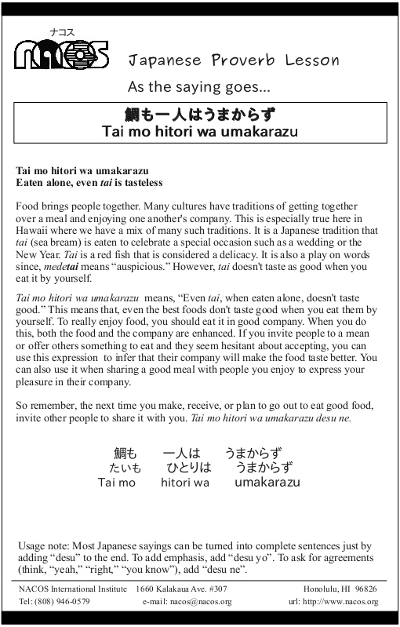

Tai mo hitori wa umakarazu
Eaten alone, even tai is tasteless
Food brings people together. Many cultures have traditions of getting together over a meal and enjoying one another's company. This is especially true here in Hawaii where we have a mix of many such traditions. It is a Japanese tradition that tai (sea bream) is eaten to celebrate a special occasion such as a wedding or the New Year. Tai is a red fish that is considered a delicacy. It is also a play on words since, medetai means “auspicious.” However, tai doesn't taste as good when you eat it by yourself.
Tai mo hitori wa umakarazu means, “Even tai, when eaten alone, doesn't taste good.” This means that, even the best foods don't taste good when you eat them by yourself. To really enjoy food, you should eat it in good company. When you do this, both the food and the company are enhanced. If you invite people to a mean or offer others something to eat and they seem hesitant about accepting, you can use this expression to infer that their company will make the food taste better. You can also use it when sharing a good meal with people you enjoy to express your pleasure in their company.
So remember, the next time you make, receive, or plan to go out to eat good food, invite other people to share it with you. Tai mo hitori wa umakarazu desu ne.
Usage note: Most Japanese sayings can be turned into complete sentences just by adding “desu” to the end. To add emphasis, add “desu yo”. To ask for agreements (think, “yeah,” “right,” “you know”), add “desu ne”.

| © 1995-2013 NACOS International Institute. All Rights Reserved. |